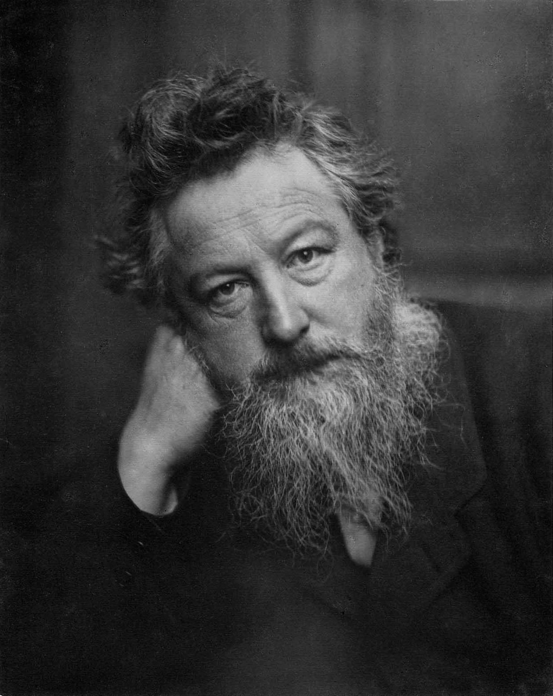

About Us
We are an online platform for engaging with artwork from the Arts and Crafts Movement. Check out our artwork section to learn more about different pieces. Interact with the piece and watch them come to life. What piece would you like to see us do next? Let us know!

and printed by Wardel and Co. 1875.
What is the Arts and Crafts Movement?
The Arts and Crafts Movement was a 19th century artistic movement in Britain. It was lead by artists like William Morris who were unhappy with the Industrial Revolution. These artists wanted to go back to a time when workers interacted with the products they created and weren't bound to factories. To learn more about their ideas, check out the interactive artwork and see what you find!

Photographed by Frederick Hollyer.
Who was William Morris?
William Morris was a true renaissance man.He was a poet and romantic writer, a designer of furniture, textiles, and prints, an outspoken socialist, a painter, and a translator of Nordic Verse. He is credited with being the founder of the Arts and Crafts Movement. You might recognize Morris's work as today his patterns adorn the walls of libraries and museums and decorate the surfaces of mugs, bags, and coasters.
Learn More
Check out these awesome resources to learn even more about the Arts and Craft Movement.